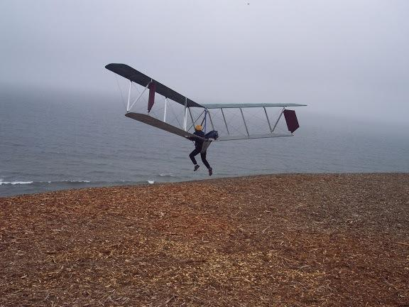
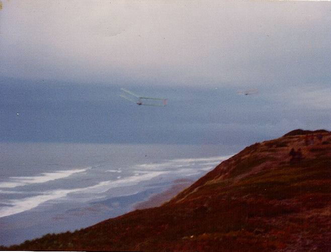
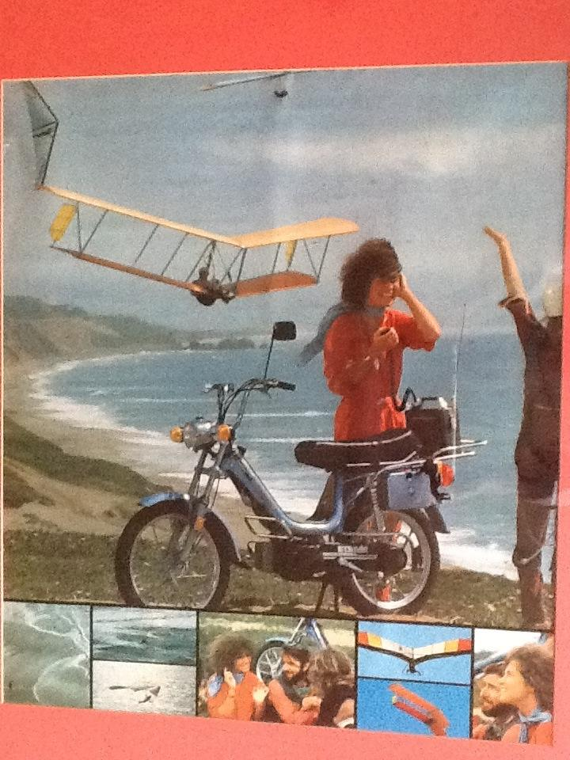

Darrel Robbins
Here's Dan Murphy flying my Riser 2006. He liked it better than the Swift.
Gene Foley Dan flew your Swift?
Darrel Robbins He did. I caught hell from the factory guys for letting him but he had the sailplane and foot launch skills. He didn't like the adverse yaw at low speeds since mine doesn't have rudders.

Thomas Low
Dave Kilbourne I think.
Darrel Robbins
Thanks for the picture. We bought a red one from him out of the clubhouse. Our first glider. They are so much fun to fly, that I finished building the one pictured above when I found it advertised on the Funston bulletin board.

Darrel Robbins
My brother above Dillon Beach on our first glider.

Darrel Robbins
Dave Kilbourne flying his Easy Riser for a promotional calendar for a moped company. I'm told that's Dan Racanelli sitting with the model below.
Fledge IIb with control bar. Can anyone help with ID of pilot? This was taken before I flew Funston. He was flying with a flex wing pilot with a winged helmet.
Paul Whitehill: Could this be Dudley Mead with Dan Rac as the winged helmet pilot?
Thomas Low: I think Paul is right about Dudley, but it could also be Ken Nead who also flew a fledge and worked with me at Chandelle.
Darrel Robbins: That makes sense. We bought our second glider, a Fledge IIb from Dudley at Chandelle sometime later. The colors were similar to this one.
Eves Tall-Chief: Guys my guess is this is Champ Fred Hutchison.etc.etc.
David Ruiz: the winged hemet was Dan Rac...